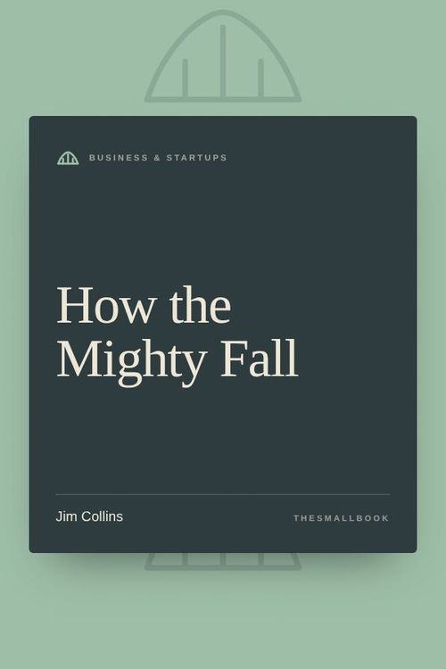

Why Did Sabena Fail?
Belgium's flag folds
What happened
Sabena carried Belgium through the jet age and built an African network rooted in history. It was inefficient, political and beloved in the complicated way national airlines become family. Swissair's own collapse cut support, losses mounted and the September 11 shock hit traffic. Sabena was declared bankrupt in November 2001, one of Europe's early flag carrier funerals.
The fatal mistake
Depending on a sick parent airline for oxygen.
The lesson
In groups, contagion is a route network too.
The antidote book

Decline is a staged disease: hubris → overreach → denial → grasping → death. It's self-inflicted, detectable, and - until stage 4 - reversible.
READ THE SUMMARY OPEN INTERACTIVE BOOKQuestions people ask about Sabena
Why did Sabena fail? Depending on a sick parent airline for oxygen.
How much was lost? Bankrupt in 2001
What is the lesson? In groups, contagion is a route network too.
Sabena kyun fail hua? In simple English: Depending on a sick parent airline for oxygen. The cost was Bankrupt in 2001.
Keep digging
More historical failures · Open the full Graveyard
Read the antidote book summary: How the Mighty Fall
Related failures
- Why did The Churning of the Ocean fail? ~5000 BCE (epic) · The Great Co-operation That Produced the Poison First
- Why did The Nanda Empire fail? ~321 BCE · The Richest Empire in India, Lost Because the King Couldn't Keep a Promise
- Why did The Kurukshetra War fail? ~3000 BCE (epic) · The War Everyone Wanted That Destroyed Everyone Who Wanted It
- Why did The Harappan Collapse fail? ~1900 BCE · The Advanced Civilization That Vanished Into Its Own Success
- Why did Easter Island fail? ~1600 · They Cut Down the Last Tree
- Why did Qin Shi Huang fail? 210 BC · The Emperor Who Drank Immortality to Death
Questions people ask about Sabena
Why did Sabena fail? Depending on a sick parent airline for oxygen.
How much was lost? Bankrupt in 2001
What is the lesson? In groups, contagion is a route network too.
Sabena kyun fail hua? In simple English: Depending on a sick parent airline for oxygen. The cost was Bankrupt in 2001.
Keep digging
More historical failures · Open the full Graveyard
Read the antidote book summary: How the Mighty Fall
Related failures
- Why did The Churning of the Ocean fail? ~5000 BCE (epic) · The Great Co-operation That Produced the Poison First
- Why did The Nanda Empire fail? ~321 BCE · The Richest Empire in India, Lost Because the King Couldn't Keep a Promise
- Why did The Kurukshetra War fail? ~3000 BCE (epic) · The War Everyone Wanted That Destroyed Everyone Who Wanted It
- Why did The Harappan Collapse fail? ~1900 BCE · The Advanced Civilization That Vanished Into Its Own Success
- Why did Easter Island fail? ~1600 · They Cut Down the Last Tree
- Why did Qin Shi Huang fail? 210 BC · The Emperor Who Drank Immortality to Death
They paid full price. You get the lesson in simple English.